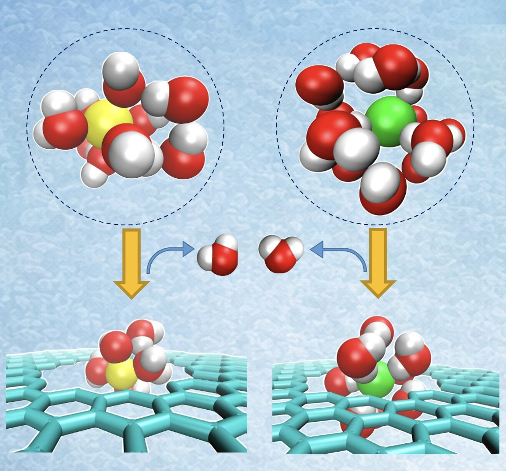
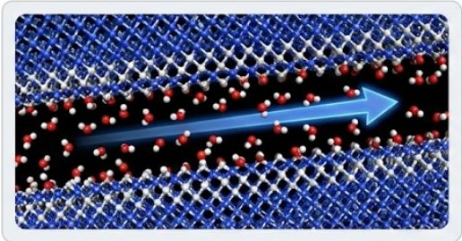
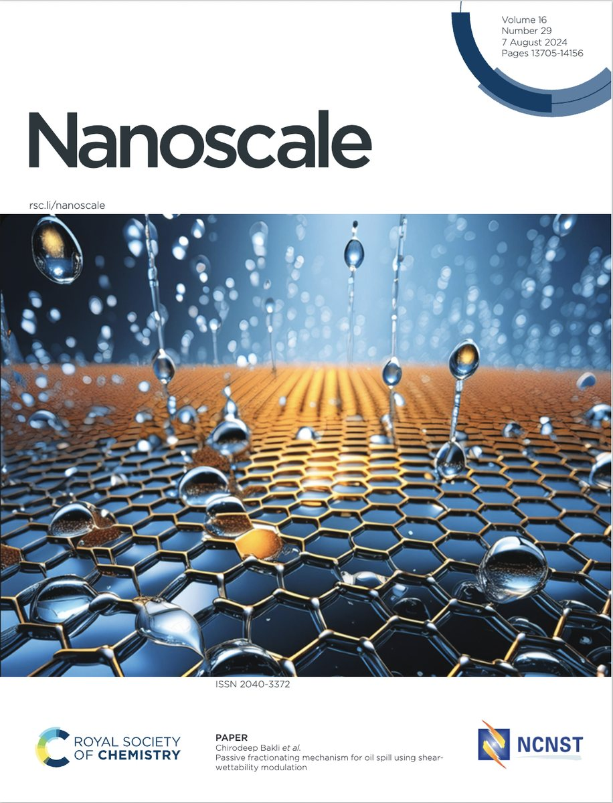
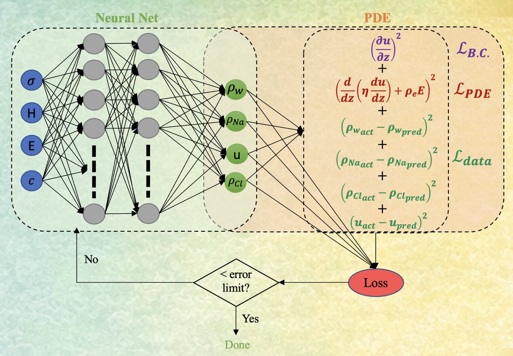
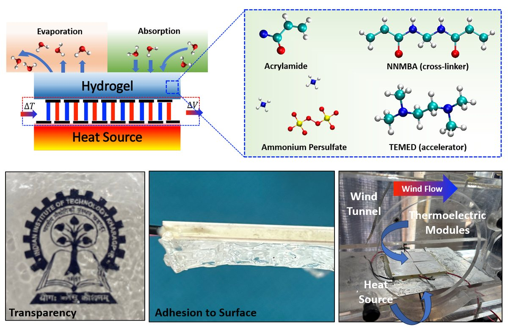

About
I am a Postdoctoral Research Fellow in the School of Energy Science and Engineering at IIT Kharagpur, working with Prof. Chirodeep Bakli in the Tensore Lab. I did both my M.Tech. and my PhD (as a Prime Minister's Research Fellow) at IIT Kharagpur under his supervision.
My research asks how fluids, ions and polymers move when squeezed into spaces only a few molecules wide, and how to turn that understanding into technology. I combine all-atom molecular dynamics with physics-informed machine learning, and take the ideas to the bench: graphene membranes for desalination, passive oil–water separation, and hydrogels that cool solar panels and electronics without power.
News
- Successfully defended my PhD (viva-voce) at IIT Kharagpur, supervised by Prof. Chirodeep Bakli. Read more →
- Submitted my PhD thesis, Transport control under confinement, supervised by Prof. Chirodeep Bakli.
- Physics-informed machine learning for graphene desalination membranes published in Desalination. Read more →
- Two papers on hydrogel passive cooling, in Solar RRL and Advanced Sustainable Systems, both featured on the journal covers. Read more →
- Presented my PhD synopsis seminar at IIT Kharagpur.
Transport control under confinement: molecular mechanisms, soft matter effects, and multiscale integration
A physics-driven multiscale framework linking molecular mechanisms in nanochannels to system-level performance in desalination, oil-spill remediation and passive cooling.

Research highlights All research →

Water & ions in graphene nanopores
Molecular design rules for low-energy desalination membranes.

Passive oil–water separation
Nanoscale wettability that fractionates oil spills, featured on a Nanoscale cover.

Physics-informed machine learning
PINNs that turn molecular simulations into device-scale predictions.

Hydrogels for passive cooling
Power-free cooling for solar panels and high-heat-flux electronics.
Academic journey
-
Postdoctoral Research FellowCurrentSchool of Energy Science and Engineering, IIT KharagpurWith Prof. Chirodeep Bakli · Tensore Lab
-
PhD (Engg.) · Prime Minister's Research FellowEnergy Science and Engineering, IIT Kharagpur · 2020 – 2026Supervisor: Prof. Chirodeep Bakli · CGPA 9.0
-
M.Tech.Energy Science and Engineering, IIT Kharagpur · 2018 – 2020Supervisor: Prof. Chirodeep Bakli · CGPA 9.11
-
B.Tech. in Mechanical EngineeringDCRUST, Murthal · 2013 – 2017
Selected publications All publications →
Looking forward to collaborationsEspecially work that connects molecular simulations and machine learning with experiments in water, thermal and energy systems.
Get in touch